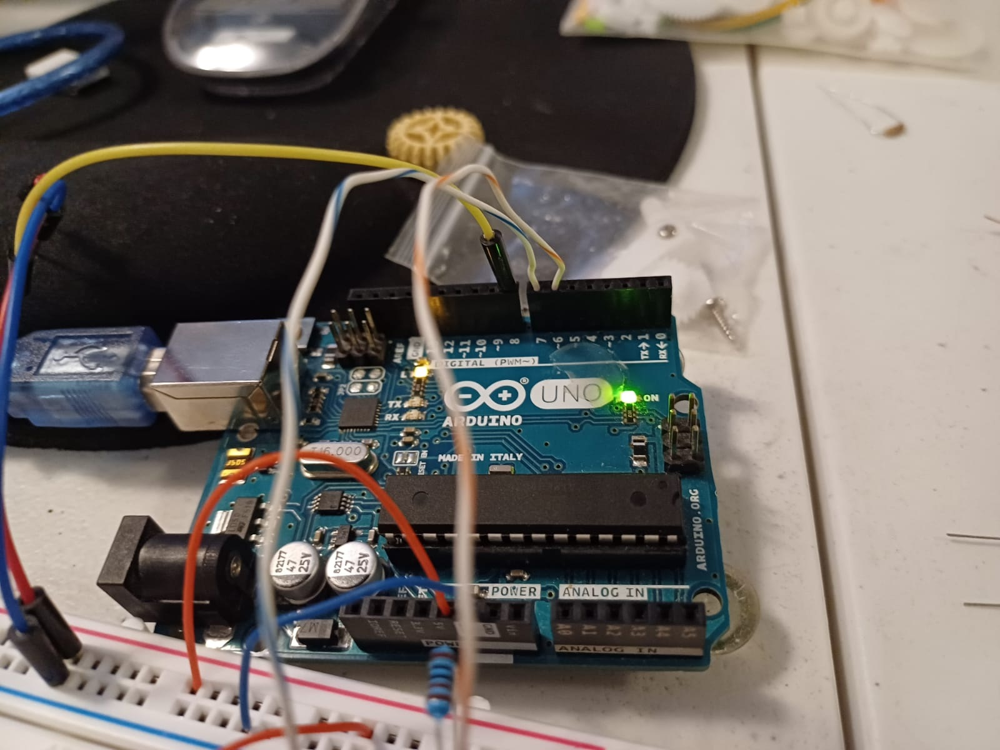

Mi presentación
Hola me llamo leonardo Sahid Pérez Solis, esta es mi presentación de mi página web, cómo dije en el video, aquí hablare de las cosas que forman parte de mi, y en la parte de abajo encontrarán un pequeño índice de las actividades que he hecho en este semestre. Me considero una persona resiliente que ha logrado avanzar a pesar de muchos obstaculos. Aunque soy un poco tranquilo y parece que no hablo, en realidad soy una persona muy abierta, esto apesar de los problemas de lenguaje que tengo. Aunque no muchas personas me entienden yo he logrado ser yo mismo sin que me afecten sus comentarios. Algo que aprendi este semestre es que debo ser mas simple, es decir, que no debo esofrzarme tanto en hacer las cosas de la mayor calidad, pues eso me resta tiempo y calidad para otras actividades. También aprendí a estar solo por la mala, pensé que podía depender mas las personas, pero al final me dejan solo, y supe que no es tan malo estar así, y cuando lo acepté comencé a tener mejores relaciones con las personas. Creo que para destacar y avanzar en la escuela, uno debe ser disciplinado y organizado. También considero importante tener claro que la escuela no lo es todo, debemos tener otra actividades, a mi me gusta mucho el basketball, y forma parte de mi, es algo que me ayuda a quitar mucho estres y mas cuando estoy jugando con amigos.
